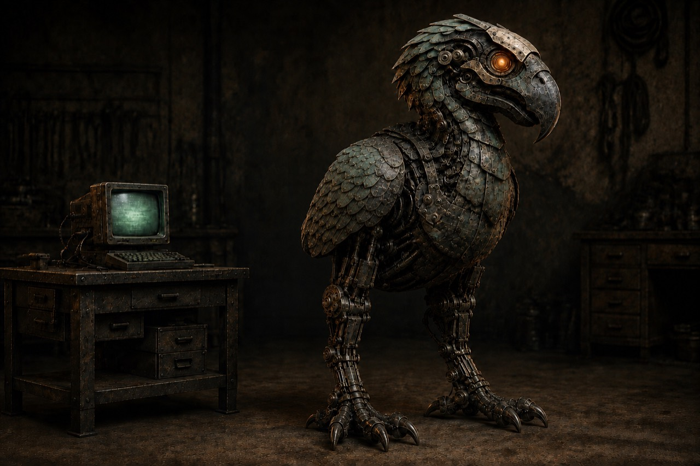

MurderBird · correction checkpoint
Modest progress; likeness remains below target. The breast and supporting legs have more mass, but the head, collar-like neck and slab-like folded wings still miss the character. Both neck reconstruction variants were rejected and are excluded. Runtime 02 preserves the useful body changes and repairs two damaged breast-plate tips. No finished exterior or artistic acceptance is claimed.
Open the local motion study · Runtime 02 · Independent visual verdict · Checkpoint and remaining work



Before and after under the same camera
Left: V19. Right: V20 body study (Runtime 01, before the two plate-tip repairs). Runtime 02 retains these proportions, pivots and materials. Geometry changes only; no material finish is claimed.


Independent visual judgment · Version and source record · Prior V19 runtime and construction review
Study 01 was rejected for its overextended throat, shrunken wing and torso, and damaged talon curvature. Preserved rejection record · Rejected whole-figure render.

Motion and inspection
Runtime 02 passes the existing attachment, kinematic, inspection, jump/thrust and claw checks. These test attachment behavior, not visual likeness or complete collision clearance. Exact editable source and repair record · Runtime export identity.


Both cervical studies remain rejected: Cervical 01 · Cervical 02 review. The next correction must shape the neck and upper breast together before dividing them into guards.

Local working evidence. These stills do not establish runtime articulation, mechanical clearance, or owner artistic acceptance. Historical sources remain intact. Creative material all rights reserved.